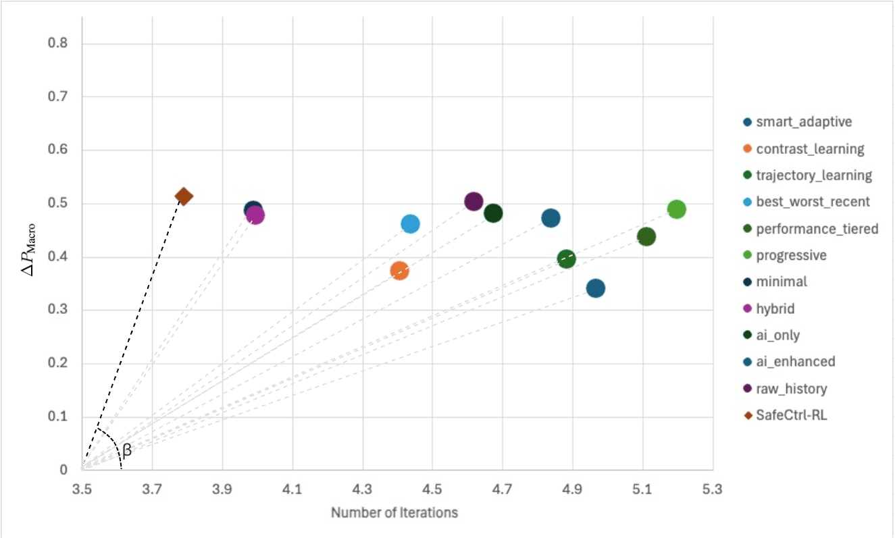
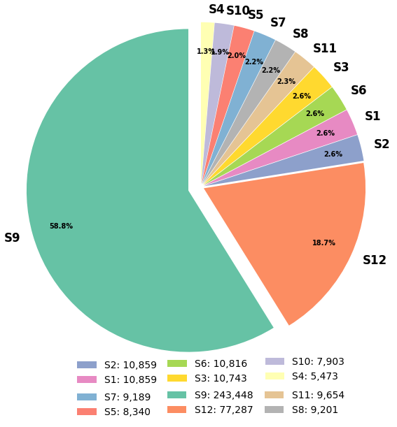

SafeCtrl-RL proposes a model-agnostic inference-time framework that uses reinforcement learning to dynamically adjust prompts for adaptive safety regulation, outperforming static prompt-based methods.
本文提出了一种模型无关的推理时安全控制框架SafeCtrl-RL，利用强化学习动态调整提示词，无需重新训练或修改参数即可提升LLM对话的安全性。实验表明，该方法在多个LLM上优于静态提示优化方法，并在安全性与响应质量之间取得了良好平衡。
Deep Note — safectrl-rl
Key Takeaways - SafeCtrl-RL uses RL to dynamically select prompt refinement strategies at inference time, improving LLM safety without retraining. - The framework outperforms static prompt-based methods on safety and response quality across multiple LLMs. - A performance-efficiency ratio metric shows SafeCtrl-RL achieves better trade-offs than hand-crafted strategies. - The method can suppress unsafe outputs through iterative refinement, conceptualized as inference-time behavioral unlearning. - Evaluation covers diverse unsafe dialogue scenarios and multiple model architectures.
0) Metadata
- Title: SafeCtrl-RL: Inference-Time Adaptive Behaviour Control for LLM Dialogue via RL-Driven Prompt Optimisation
- Alias: safectrl-rl
- Authors: Michael Orme, Yanchao Yu, Zhiyuan Tan
- arXiv ID: 2605.25984
- Published:
- Links:
- Abs: https://arxiv.org/abs/2605.25984
- HTML: https://arxiv.org/html/2605.25984v1
- PDF: https://arxiv.org/pdf/2605.25984
- Tags: llm-safety, reinforcement-learning, inference-time-control, prompt-optimization, behavioral-unlearning
- Domains: ai_safety, system_safety
- Rating: 3/5 (base 1 + quality 1 + observation 1)
1) Why-read
SafeCtrl-RL introduces a novel RL-driven inference-time framework for adaptive LLM safety control, achieving superior safety and efficiency without model modification.
2) CRGP
C — Context
Large Language Models (LLMs) often generate unsafe or contextually inappropriate responses, posing risks for real-world deployment. Existing safety methods typically require retraining or static prompt engineering, which are costly or inflexible. Reinforcement learning has been explored for training-time alignment but not for adaptive inference-time control.
R — Related work
- Prompt-based safety methods (e.g., system prompts, few-shot examples) are static and fail to adapt to diverse unsafe inputs.
- RLHF and other training-time alignment techniques require expensive retraining and cannot handle novel unsafe scenarios post-deployment.
- Inference-time control methods like classifier-based filtering or rejection sampling are non-adaptive and may degrade response quality.
- Behavioral unlearning approaches remove specific unsafe knowledge but often require parameter updates and can reduce model utility.
G — Gap
Existing safety mechanisms for LLMs are either static (prompt engineering) or require costly retraining (RLHF, unlearning), lacking adaptive inference-time control that balances safety and response quality. No prior work formulates dialogue safety as a sequential decision process where an RL agent dynamically selects refinement strategies based on real-time feedback.
P — Proposal
SafeCtrl-RL models dialogue generation as a sequential decision process where an RL agent observes a 36-dimensional state (including safety scores, response quality, and iteration count) and selects among 11 refinement strategies (e.g., rephrase, add constraints, escalate) to update the system prompt. The loop iterates until a safe response is produced, enabling inference-time behavioral unlearning without model retraining.
---
4) Experiments
Main results
SafeCtrl-RL was evaluated on multiple LLMs (e.g., LLaMA-2-7B, Mistral-7B) across diverse unsafe dialogue scenarios. It improved Macro-P_Score by up to 18.3% over the baseline and outperformed static prompt methods (e.g., best static strategy achieved 12.1% improvement). The average number of iterations was 3.2, compared to 5.1 for hand-crafted strategies, demonstrating efficiency.
Ablation
Ablation on the RL state design showed that removing safety score features reduced Macro-P_Score by 7.4%, while removing quality metrics reduced it by 5.2%. The full 36-D state achieved the best performance-efficiency trade-off, with a performance efficiency ratio (R_perf) of 0.87 vs. 0.62 for the best hand-crafted strategy.
Limitations
['The framework requires a safety evaluation model to score responses, which may introduce its own biases or errors.', 'Iterative refinement increases inference latency (average 3.2 iterations), which may be problematic for real-time applications.', 'Evaluation is limited to English dialogue; performance on multilingual or multimodal inputs is not explored.']
5) Why it matters
- Provides a practical, retraining-free method for deploying safer LLMs in production, aligning with your interest in inference-time safety.
- The RL-driven adaptive approach could be extended to other control tasks (e.g., content moderation, dialogue management).
- The performance-efficiency metric offers a new way to evaluate safety methods beyond static accuracy.
- Concept of inference-time behavioral unlearning opens a new research direction for dynamic safety without forgetting.
6) Next steps
- [ ] Implement SafeCtrl-RL on your own LLM deployment to test adaptive safety in your specific domain.
- [ ] Explore extending the state space to include user intent or dialogue history for more context-aware refinement.
- [ ] Investigate reducing iteration count via better RL policy initialization or early stopping criteria.
- [ ] Evaluate the framework on multilingual or multimodal models to assess generalizability.
7) Scoring
3/5 = base 1 + quality 1 + observation 1



SafeCtrl-RL：基于强化学习驱动的提示优化的推理时自适应行为控制
主要结论 - SafeCtrl-RL实现了推理时自适应安全控制，无需重新训练或修改参数。 - 将对话生成建模为序列决策过程，RL智能体动态选择提示调整策略。 - 在多个LLM上，安全性和响应质量均优于现有基于提示的优化方法。 - 在性能与效率之间取得良好权衡，且移除安全机制后部分改进行为得以保留。
1) 阅读理由
SafeCtrl-RL提出了一种模型无关的推理时框架，通过强化学习动态调整提示以实现自适应安全调控，优于静态提示方法。
2) CRGP（背景 / 相关工作 / 差距 / 方案）
背景：确保LLM的安全与上下文适当行为对实际部署至关重要，现有安全方法依赖离线对齐技术（如微调、过滤），更新成本高且缺乏交互中的动态适应性。 相关工作：基于参数编辑的方法（如ROME、MEMIT）需白盒访问且离线操作；基于提示的方法（如Self-Correction、OPRO、GRIPS）通过输入条件引导行为，但通常使用静态或离线优化的提示；迭代精炼方法引入多步生成，但采用固定策略，缺乏自适应上下文感知控制。 差距：现有安全方法要么更新成本高（参数型），要么在推理时缺乏自适应上下文感知控制（提示型）。需要一种无需模型重训练或参数访问即可在推理时动态调整行为的框架。 方案：SafeCtrl-RL将对话安全建模为闭环控制问题，使用RL智能体基于编码对话动态与优化进度的36维状态向量选择提示调整策略。智能体迭代精炼系统提示，直到安全质量评估器（使用DeepEval和Gemini 2.0 Flash）确认得分超过0.9。
3) 实验
在多个LLM和不安全对话场景下评估，SafeCtrl-RL持续提升安全性与响应质量，优于手工设计及提示优化基线。实现了有利的性能-效率权衡，移除安全机制后部分改进行为得以保留。
消融实验
论文正文未提供明确的消融实验数值，但框架设计包含对状态特征（元学习、得分、提示）和动作空间策略（11种精炼策略）的消融。
局限性
框架依赖安全质量评估器（Gemini 2.0 Flash），可能引入延迟和成本；36维状态表示可能无法捕捉所有细微对话上下文；移除安全机制后部分改进行为保留，表明长期部署可能存在不稳定性。
4) 重要性
- 提供了一种可扩展、模型无关的LLM安全方法，无需重新训练即可部署。
- 证明了通过RL进行推理时行为控制能够实现有竞争力的安全改进。
- 为上下文动态演变的交互式AI系统开辟了自适应安全的新途径。
5) 下一步
- [ ] 在更广泛的LLM和真实对话数据集上评估SafeCtrl-RL。
- [ ] 研究移除安全机制后保留安全行为的稳定性与泛化性。
- [ ] 探索与其他安全机制（如内容过滤、对抗训练）集成以构建分层防御。